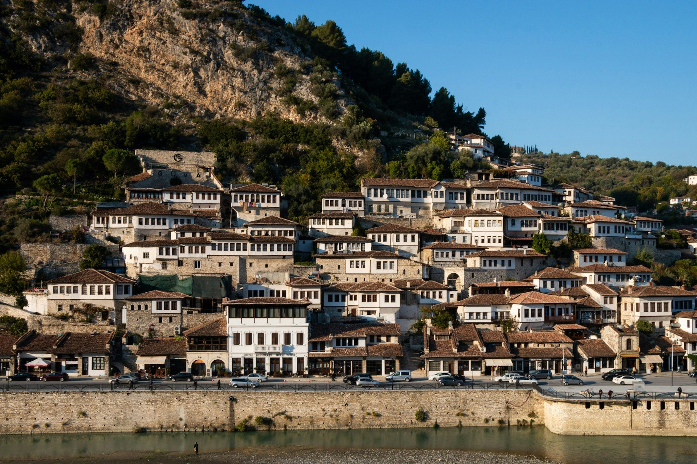
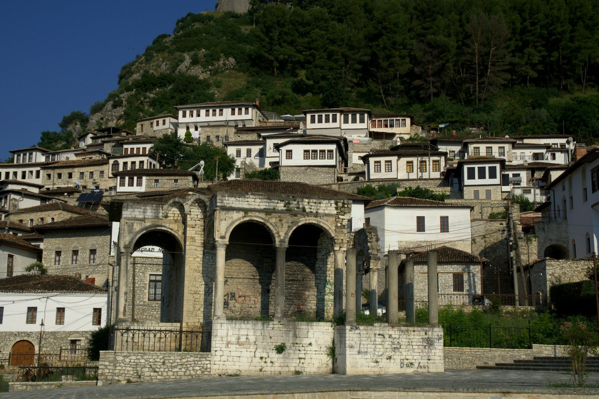
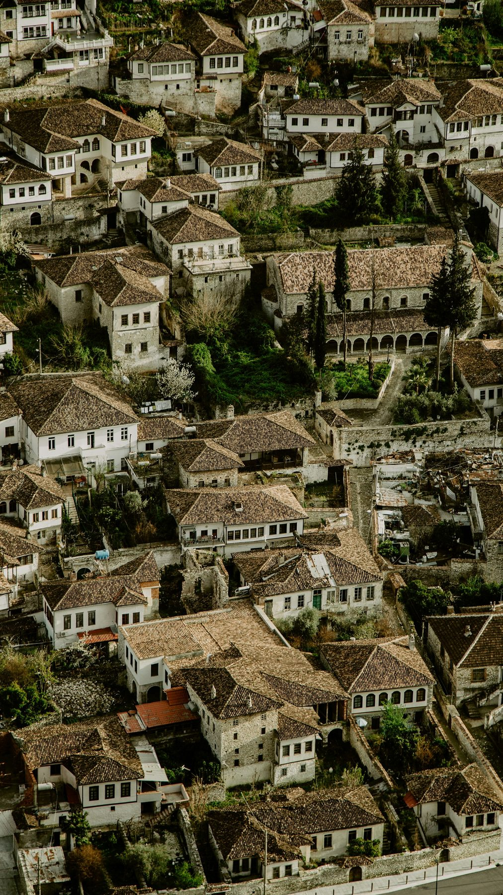

Marked on the map · 4 pins
Nicole's own pins from the map list — each opens straight in Google Maps.

No. 14 · Albania · Days 12–13 · the city of a thousand windows
A UNESCO Ottoman old town of stacked white houses, still lived in. Our plan: sleep in a restored Ottoman house in Mangalem and end the trip slowly.
Berat's famous sight is a housing style: two- and three-storey Ottoman houses with whole façades of windows, climbing the hill in rows so dense the hillside reads as one enormous building. Cross the river for the front-on view — the viewing platform and the bridge at the hill's foot give you the postcard — then get lost inside the Mangalem lanes, where the same windows look back down at you, with laundry and geraniums doing the set dressing.
Across the water sits Gorica, the Christian quarter that mirrors Mangalem window for window, joined to it by an old stone bridge. Between the two, the town politely forces you to walk slower.

Up on the hill, Berat castle is not a ruin cordoned off with a rope — it is a village with a wall around it, and people still live inside. Climb on foot in the evening, walk the full circuit of the ramparts for the view down over both quarters and the river bend, and visit the Onufri museum in its church: icons by the 16th-century painter famous for a particular red that no one has ever quite matched. Sunset up here is the closing scene of the whole trip; plan the last evening accordingly.

The final days of a trip should not be rushed, and Berat is built for not rushing. Options, in descending order of effort: a half-day out to the Osumi canyon if the group wants one more outdoor moment; an afternoon of nothing but the Bulevardi Republika stroll and a long lunch; or an evening at a Çobo wine tasting — a fitting send-off from the heart of Albania's wine country.
Eat & drink: slow, long-last-dinner energy. Local wine, grilled everything, and it's still cheap. Cash (lek).Field note · Balkans 2027
Marked on the map · 4 pins
Nicole's own pins from the map list — each opens straight in Google Maps.
| No. | Pin | Open |
|---|---|---|
| 1 | Berat Viewing PlatformThe terrace with the thousand-windows view over Mangalem. | Maps ↗ |
| 2 | Ura e VarurThe bridge at the foot of the hill — the classic front-on shot of the quarter. | Maps ↗ |
| 3 | Old Town BeratThe Mangalem lanes and the Ottoman houses, still lived in. | Maps ↗ |
| 4 | Bulevardi Republika"Main street in Berat" — the evening stroll strip. | Maps ↗ |